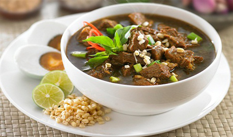

Resep Rawon

Rawon merupakan salah satu makanan khas Jawa Timur yang terkenal karena kuahnya yang kaya dan berwarna hitam pekat. Berikut resep rawon yang dapat anda buat sendiri di rumah :
Bahan - Bahan :
- 500 gram daging sapi (pilih potongan daging yang Anda sukai, seperti daging sandung lamur)
- 2 batang serai, memarkan
- 4 lembar daun salam
- 2 lembar daun kunyit
- 2 lembar jaun jeruk
- 2 cm lengkuas, memarkan
- 3-4 sendok minyak goreng
- 2 liter air
- Garam secukupnya
- Gula secukupnya
- Air asam jawa secukupnya
Bumbu Halus :
- 5 siung bawang putih
- 10 siuang bawang merah
- 6 butir kemiri sangrai
- 1 sendok teh terasi (opsional)
- 2 sendok makan ketumbar bubuk
- 2 cm kencur
Bahan Pelengkap :
- Tauge
- Telur rebus
- Kerupuk udang
- Bawang merah goreng
- Irisan jeruk nipis
Cara Membuat Rawon :
- Siapkan daging sapi dan rebus dalam air mendidih hingga empuk
- Selama daging direbus, panaskan minyak goreng dalam wajan. Tumis bumbu halus hingga harum dan berubah warna. Pastikan tidak terlalu garing
- Setelah daging empuk, angkat dan potong-potong sesuai selera. Simpan kaldu dari rebusan daging untuk digunakan nanti
- Masukkan daging yang telah dipotong ke dalam wajan bersama dengan bumbu halus yang sudah ditumis. Tambahkan serai, daun salam, daun jeruk, lengkuas, dan jahe
- Tambahkan air kaldu daging yang sudah disimpan tadi. Biarkan semua bahan mendidih dan kuahnya meresap dengan baik. Anda dapat menambahkan garam, gula, dan air asam jawa secukupnya untuk mendapatkan rasa yang sesuai dengan selera Anda
- Setelah kuahnya matang dan beraroma harum, angkat rawon dari api
- Sajikan rawon dalam mangkuk. Hidangkan dengan tauge, telur rebus, kerupuk udang, bawang merah goreng, dan irisan jeruk nipis